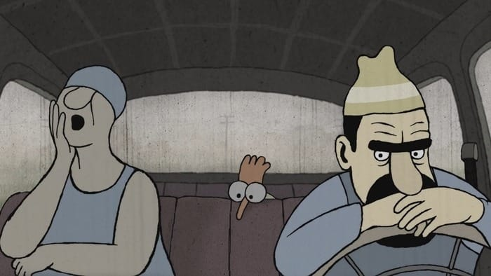

Водил сегодня первый раз лет за десять. Забыл уже, как это круто :)
Tour de France 2015
Очень одинокий петух

Вивальди Жака Люсье
Арзамас
Небольшая история о том, как и почему Бродского вернули из ссылки досрочно. Ну или вот, например, "Русский авангард".
Coco de Mer: X
Ого!
О запретах
У Тимура в садике новая воспитательница на лето. Он сегодня мне рассказал немного про нее:
— Нам сказали, что запрещено, а что разрешено.
— И что же вам запрещено?
— Ну... запрещено в раздевалке кричать... еще баловаться...
Потом немного помолчал и добавил:
— Столько всего запрещено, что я даже забыл, что разрешено!
Так и живем.
Джон Нэш
Очень понравилась небольшая заметка Дмитрия Быкова о Джоне Нэше:
— Насколько правдиво в фильме показано ваше общение с воображаемыми людьми?
— Я никогда не видел воображаемых людей, иногда слышал их. Большинство же всю жизнь видит именно воображаемых людей, понятия не имея о реальных.
R.I.P.
Бродский не поэт
И вот на Кинопоиске. Рекомендую.
Цвет нации
Телевизора нет, поэтому вот такие фильмы приходится смотреть с опозданием, но лучше поздно, чем никогда :)